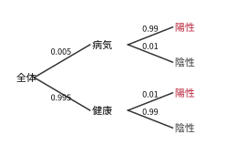

ホーム ＞ 数学A ＞ 条件付き確率・期待値
別冊章末問題の解答
1. 3個のさいころを同時に投げる。目の和が7以上であるとき、3つの目がすべて異なる確率を求めよ。
（例題1の型）
【答案】
\[\dfrac{57}{98}\]答
2. 袋Aには赤玉2個と白玉4個、袋Bには赤玉4個と白玉2個が入っている。さいころを投げて 1 の目が出たら袋A、他の目なら袋Bを選び、玉を1個取り出したら赤玉だった。この玉が袋Aのものである確率を求めよ。
（例題2の型）
【答案】
\[\dfrac1{11}\]答
3. 赤玉4個と白玉4個の袋から同時に3個取り出すとき、赤玉の個数 \(X\) の期待値を求めよ。
（例題3の型）
【答案】
\[\dfrac32\]答
4. 1から5までの番号をつけた5枚の札から同時に2枚引くとき、引いた札の番号の大きい方 \(X\) の期待値を求めよ。
（例題4の型）
【答案】
\[4\]答
5. 3枚の硬貨を投げる。賞金は 0枚→0円、1枚→90円、2枚→270円、3枚→\(x\) 円。参加費が180円で公平となる \(x\) を求めよ。
（例題5の型）
【答案】
\[x=360\]答
6. ある病気にかかっている人の割合は \(\dfrac{1}{200}\) である。この病気の検査では、病気の人が陽性になる確率が \(\dfrac{99}{100}\)、病気でない人が陽性になる確率が \(\dfrac{1}{100}\) である。検査で陽性だった人が、実際に病気である確率を求めよ。
樹形図で整理
病気 \(D\)、陽性 \(T\)。

陽性になる確率
\[P(T)=\dfrac{1}{200}\cdot\dfrac{99}{100}+\dfrac{199}{200}\cdot\dfrac{1}{100}=\dfrac{149}{10000}\]条件付き確率
\[P(D\mid T)=\dfrac{P(D\cap T)}{P(T)}=\dfrac{\dfrac{99}{20000}}{\dfrac{149}{10000}}=\dfrac{99}{298}\]（例題6の型）
【答案】
\[\dfrac{99}{298}\]答
7. \(250\) 本のくじに、賞金 \(800\) 円が \(5\) 本、賞金 \(100\) 円が \(20\) 本 が入っている（残りははずれ）。このくじ1本の賞金の期待値を求めよ。損得なしとなるくじ1本の値段はいくらか。
確率分布
賞金と本数：
\[\begin{array}{c|ccc}\text{賞金}&800&100&0\\\hline\text{本数}&5&20&225\end{array}\]期待値
期待値 \(E=\sum(\text{賞金})\times(\text{確率})\)。
\[E=800\cdot\dfrac{5}{250}+100\cdot\dfrac{20}{250}=24\]公平な値段
1回の値段が期待値に等しいとき、損も得もない。
\[24\ \text{円}\]（例題7の型）
【答案】
\[E=24\ \text{円（値段も }24\text{ 円）}\]答
8. 赤玉 \(1\) 個と白玉 \(5\) 個が入った袋から、玉を1個ずつ取り出していく（取り出した玉はもどさない）。はじめて赤玉が出るまでに取り出す回数の期待値を求めよ。
考え方
赤 \(1\) 個・白 \(5\) 個を1列に並べたとみる。赤が \(1\) 個あると、白が入るすき間は \(2\) か所。
最初の赤の前にある白の個数
白は各すき間に対称にふり分けられるので、最初の赤の前の白の期待値は \(\dfrac{5}{2}\)。
期待値
最初の赤が出る回数 = 前の白の個数 + 1。
\[E=1+\dfrac{5}{2}=\dfrac{7}{2}\]（例題8の型）
【答案】
\[\dfrac{7}{2}\]答
9. \(A,\ B\) が試合を行い、先に2勝したほうが優勝とする。1試合で \(A\) が勝つ確率は \(\dfrac{1}{3}\) で、引き分けはない。試合数の期待値と、\(A\) が優勝する確率を求めよ。
試合数の確率
先に2勝したほうが優勝。\(A\) が1試合に勝つ確率を \(p=\dfrac{1}{3}\)。
\[P(2\text{試合})=p^2+q^2=\dfrac{5}{9},\qquad P(3\text{試合})=2pq=\dfrac{4}{9}\]期待値
\[E=2\cdot\dfrac{5}{9}+3\cdot\dfrac{4}{9}=\dfrac{22}{9}\]\(A\) が優勝する確率
2連勝、または1敗をはさんで2勝。
\[p^2+2p^2q=\dfrac{7}{27}\]（例題9の型）
【答案】
\[E=\dfrac{22}{9},\ \ P(A\text{優勝})=\dfrac{7}{27}\]答
10. 大小2つのさいころを投げる。目の和が \(8\) 以上であったとき、「差が2以上」である確率を求めよ。
条件 \(A\)
2つのさいころ（区別する）の目の和が \(8\) 以上：
\[n(A)=15\]\(A\cap B\) の個数
\(B\)：「差が2以上」。
\[n(A\cap B)=8\]条件付き確率
\[P_A(B)=\dfrac{n(A\cap B)}{n(A)}=\dfrac{8}{15}\]（例題10の型）
【答案】
\[\dfrac{8}{15}\]答